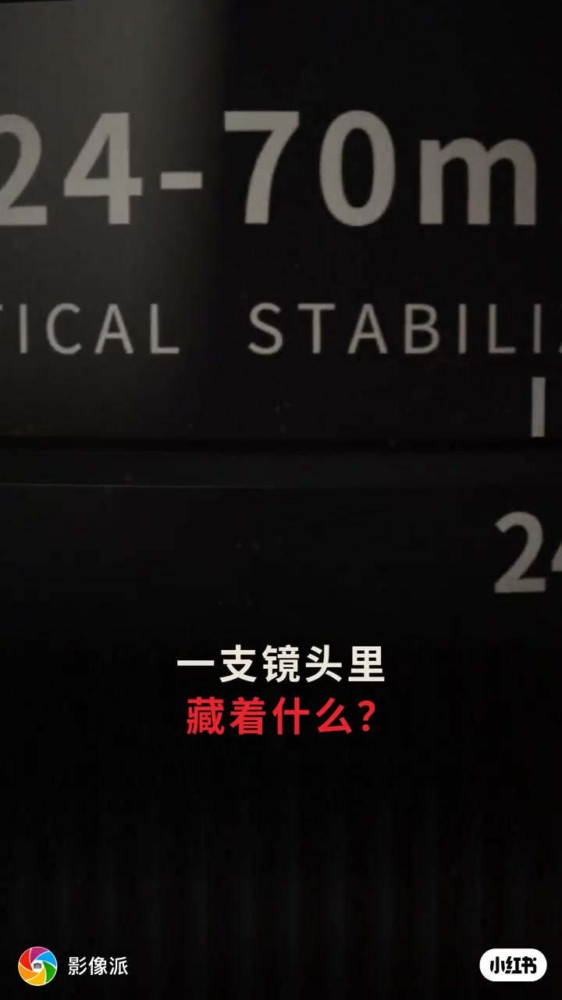
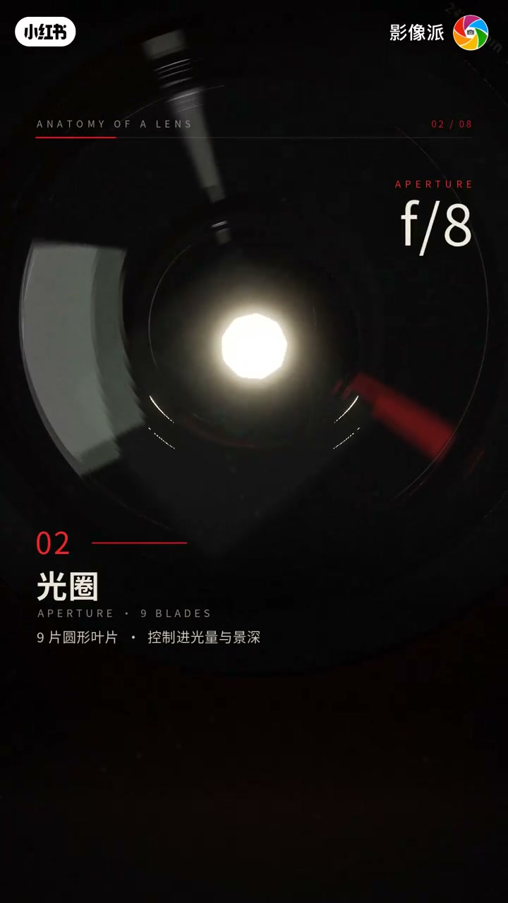
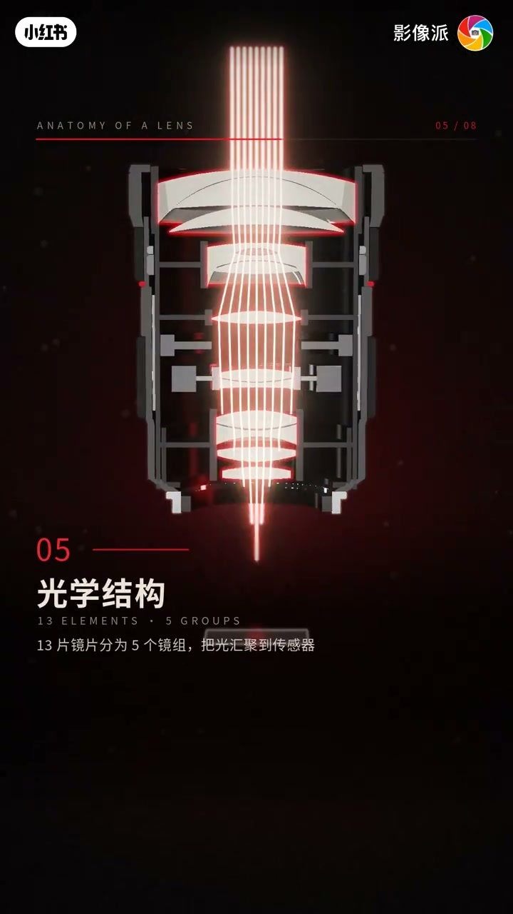
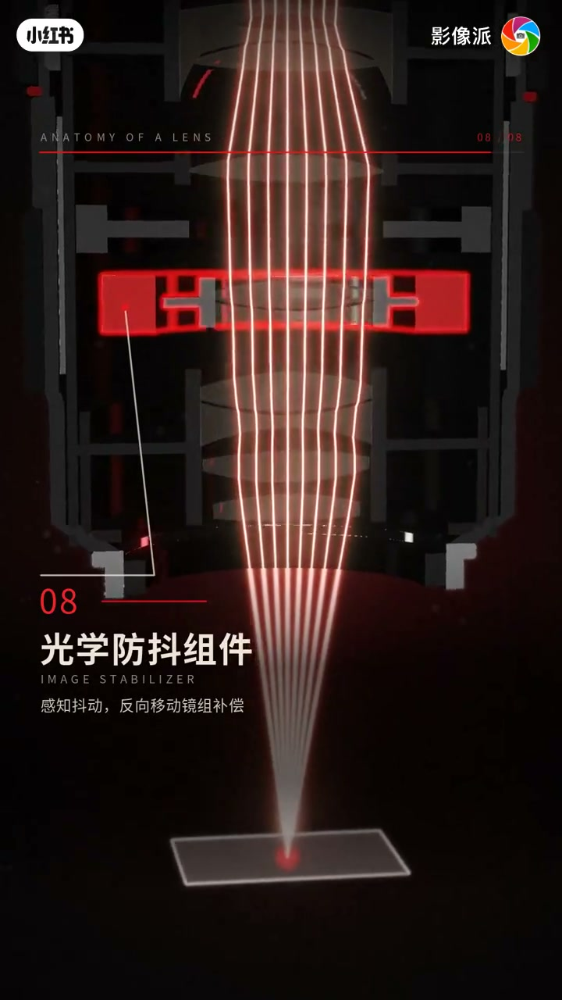

内容要点
「影像派」用 24-70mm F2.8 风格 3D 解剖，8 步拆镜头：前组镀膜、九叶片光圈、变焦/对焦环、卡口触点、13片5组光学、ED/非球面、环形超声波马达、光学防抖。口播被 BGM 歌词淹没（Whisper 仅识出「词曲 李宗盛」），全文依据画面字幕重建。
知识结构
[00:00→00:10]
开场
「一支镜头里藏着什么？」展示 24-70/F2.8 镜筒。
[00:10→00:26]
01–04
前组多层镀膜；f/11 九叶片控光与景深；变焦/对焦环；金属卡口+电子触点。
[00:26→00:48]
05–08
13片5组汇聚到传感器；ED抑色散+非球面校像差；USM 驱动对焦；IS 反向补偿抖动。
总结
镜头不是「一块玻璃」：镀膜抑眩光、光圈管景深、镜组汇聚、特殊玻璃校像差、马达对焦、防抖补偿——每层都在管光。
00:00-00:26从镜筒到卡口：进光与通信的外层
标题卡：「一支镜头里藏着什么？」随后 ANATOMY OF A LENS 01–04：前组弯月镜片+多层镀膜抑眩光；光圈九片圆形叶片控进光与景深；变焦环改焦距、对焦环精细手动对焦；金属卡口保精度，触点传数据。

[00:02] 标题：一支镜头里藏着什么？
Title: what’s hidden inside a lens?

[00:14] 02 光圈：九叶片，控进光与景深
02 Aperture: nine blades controlling light and depth of field
00:26-00:48光学核心：镜组、特殊玻璃、马达与防抖
05 光学结构：13 片分为 5 组，把光汇聚到传感器。06 ED/非球面：ED 抑色散，非球面校正像差。07 环形超声波马达：高速静音精准驱动对焦镜组。08 光学防抖：感知抖动并反向移动镜组补偿。
脚注：Whisper 仅 2 段「词曲 李宗盛」，口播不可用；章节与图注全部依据本地画面字幕与 01–08 序号卡重建。

[00:26] 05 光学结构：13片5组汇聚到传感器
05 Optics: 13 elements in 5 groups converging onto the sensor

[00:38] 08 光学防抖：反向移动镜组补偿
08 Optical IS: counter-moving groups for compensation
完整转录（2段）
以下文本由 Whisper medium 模型自动转录，可能存在少量识别误差，已尽可能修正。
词曲 李宗盛
词曲 李宗盛